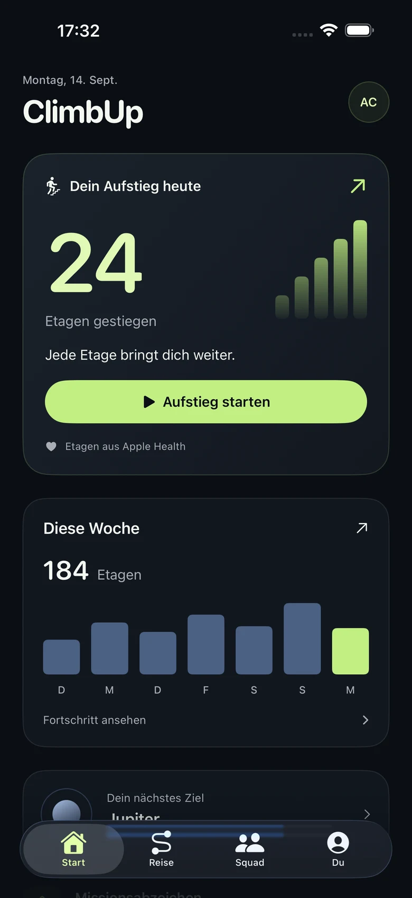
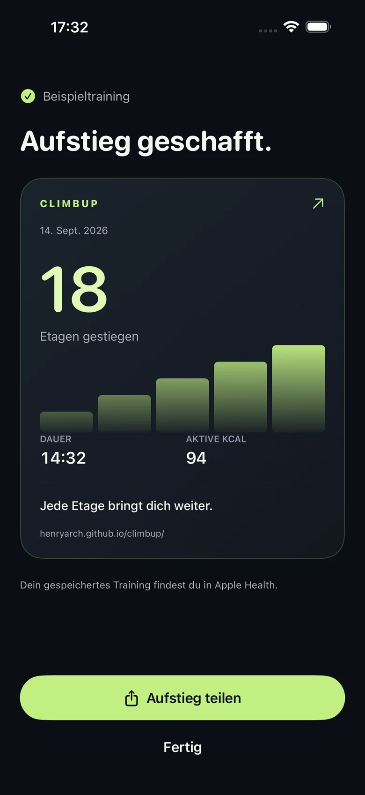

Deine Etagen im Überblick.
Sieh deinen Tag und deine Woche auf einen Blick. Verbinde Apple Health, um deine bisher erfassten Etagen zu sehen.
Treppenzähler · iPhone + Apple Watch
Aus deinen Etagen in Apple Health wird mehr: ein klarer Tagesüberblick, gespeicherte Trainings und eine Reise, die mit dir wächst.
Einmal kaufen. Kein Abo.
Den aktuellen Preis findest du in deinem App Store.

Climb. Save. Repeat.
Im Alltag einfach. Auf Dauer motivierend.
Sieh deinen Tag und deine Woche auf einen Blick. Verbinde Apple Health, um deine bisher erfassten Etagen zu sehen.
Starte ein Treppentraining. Sobald Apple Health das Speichern bestätigt, kannst du das Ergebnis ansehen und auf Wunsch teilen.
Deine gesammelten Etagen werden zu einer Reise durchs All. Ein Ruhetag löscht deinen bisherigen Fortschritt nicht.
Neu in 2.4 · Nach der letzten Etage
Ein klares Ergebnis für deinen Einsatz. Sieh dir die Dauer und verfügbare Trainingsdaten an und teile deinen Erfolg, wenn du möchtest.
Ansichten mit Beispieldaten. Messwerte hängen von Gerät und Berechtigungen ab.

Alle Funktionen von ClimbUp, ohne wiederkehrende Zahlung.
Nein. Auf dem iPhone liest ClimbUp Etagen aus Apple Health. Mit einer Apple Watch kannst du am Handgelenk trainieren. Für die Herzfrequenz auf dem iPhone ist eine kompatible Quelle erforderlich.
Live-Trainingsdaten auf dem iPhone benötigen iOS 26 oder neuer und kompatible Datenquellen. Ältere iOS-Versionen erfassen die Trainingsdauer. Messwerte können verzögert eintreffen; fehlende Daten werden als nicht verfügbar angezeigt.
Automatisches Etagenzählen auf Treppenmaschinen wird nicht unterstützt. ClimbUp ist für echte Treppen und die von deinen Geräten in Apple Health erfassten Etagen gedacht.
HealthKit-Rohdaten bleiben auf deinem Gerät. Optionale soziale Funktionen teilen abgeleitete Fortschritte über Apple-Dienste. Eine Ergebniskarte wird nur auf deinen Wunsch geteilt. Details stehen in der Datenschutzerklärung.
Nein. ClimbUp wird einmalig im App Store gekauft. Den aktuellen lokalen Preis siehst du vor dem Kauf in deinem Store.